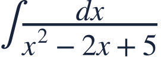
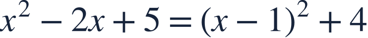
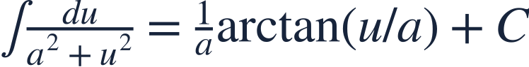
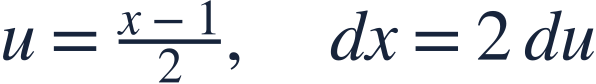
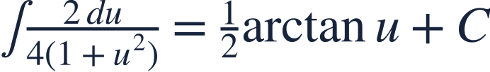
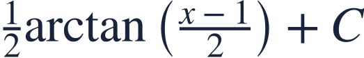
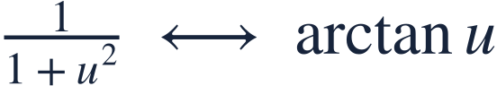
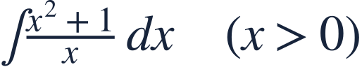

Algebra and inverse trigonometric integrals
식 정리와 역삼각 적분

Algebra can reveal a familiar inverse-trig antiderivative hidden in a quadratic denominator.
분모의 이차식을 정리하면 익숙한 역삼각함수 적분 형태가 보입니다.

Algebra can reveal a familiar inverse-trig antiderivative hidden in a quadratic denominator.
분모의 이차식을 정리하면 익숙한 역삼각함수 적분 형태가 보입니다.

Complete the square before selecting an integration rule.
적분 공식을 고르기 전에 완전제곱식을 만드세요.

The arctangent pattern is a reciprocal of a positive square plus a constant square.
아크탄젠트 형태는 제곱식과 양의 상수 제곱의 합을 분모로 가집니다.

Scale the squared expression so the denominator becomes 4(1+u²).
분모가 4(1+u²)이 되도록 제곱식을 조정합니다.

Retain the coefficient introduced by the substitution.
치환에서 생긴 계수를 유지합니다.

Return to x; differentiating verifies the result for all real x.
x로 되돌리고 미분해 확인합니다. 모든 실수 x에서 성립합니다.

A numerator unlike the denominator derivative does not automatically give a logarithm.
분자가 분모의 도함수와 다르면 무조건 로그로 적분할 수 없습니다.

Simplify the quotient first.
몫을 먼저 간단히 정리하세요.